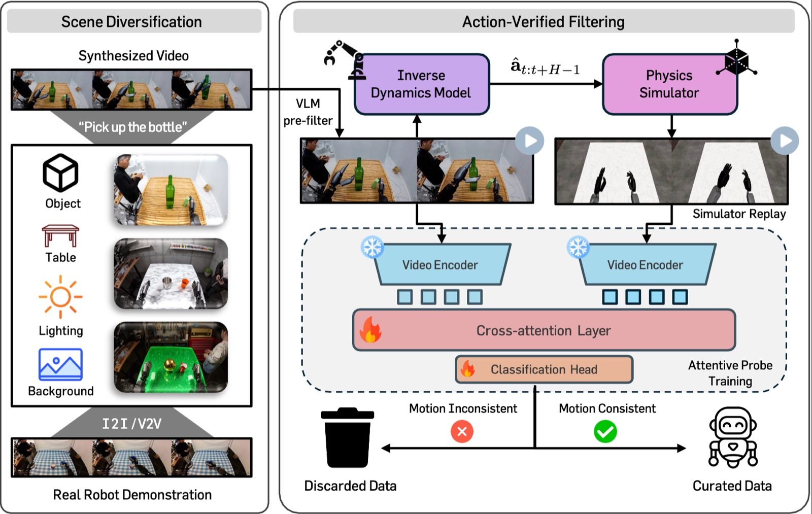
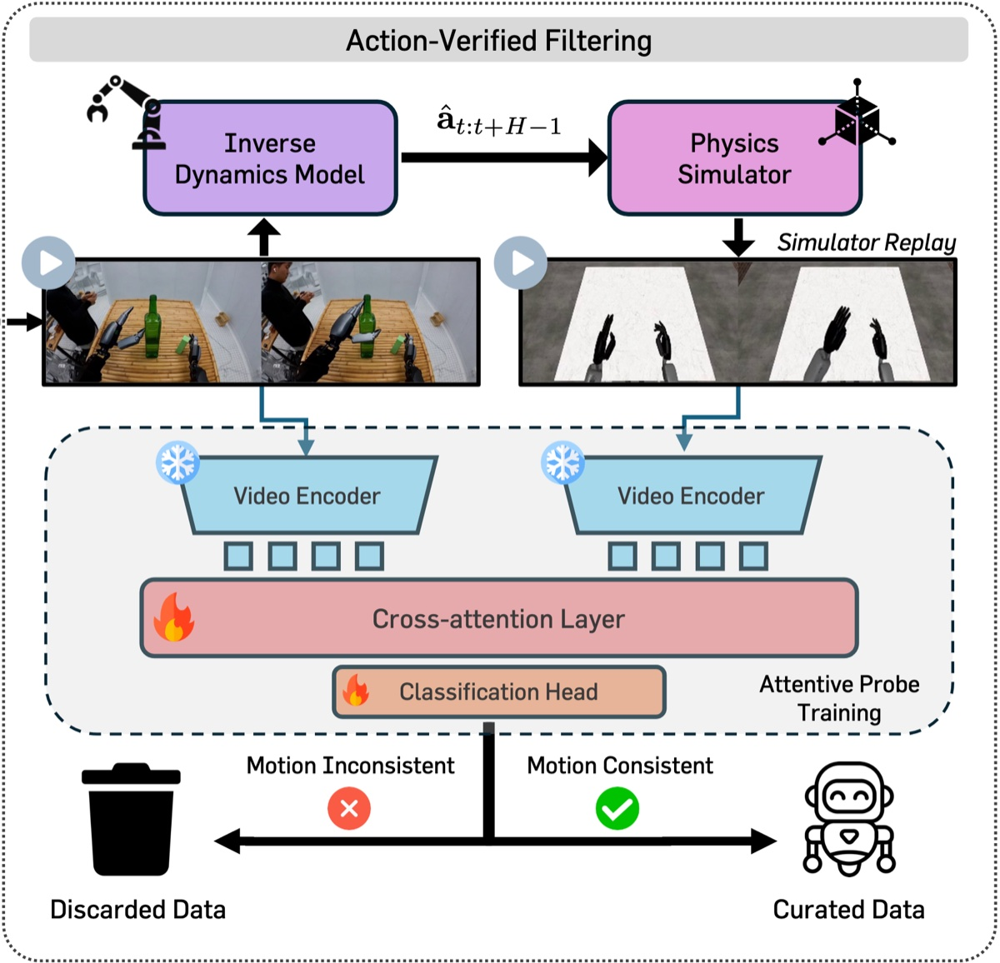
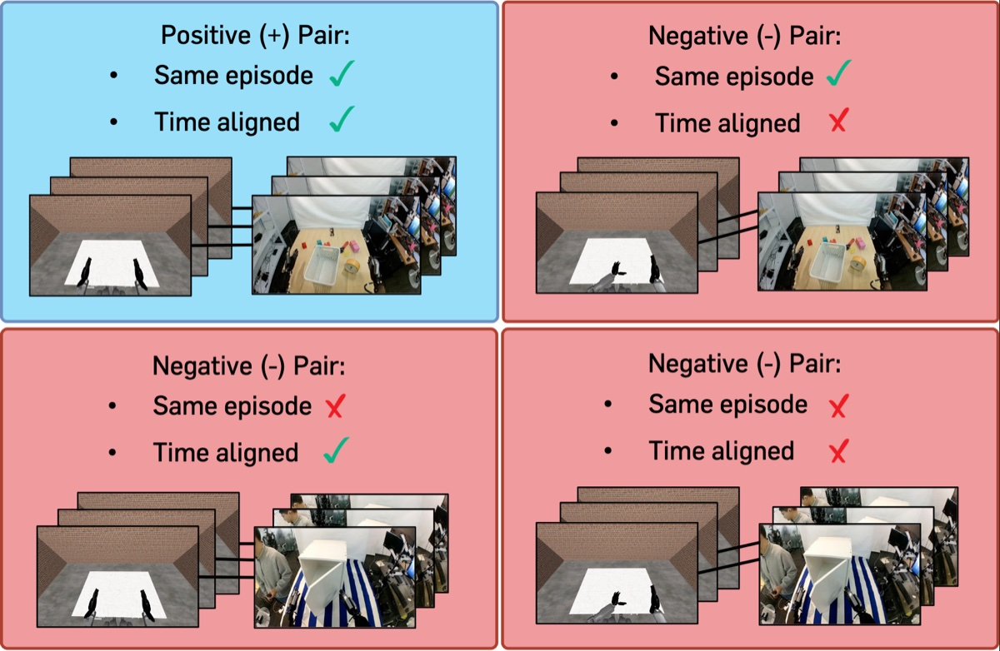
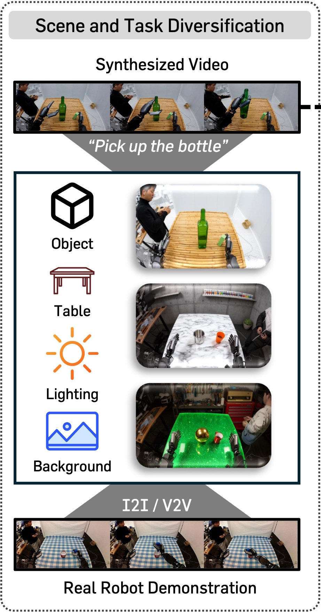

TL;DR: RoboCurate verifies the action labels of synthetic robot videos by replaying them in a simulator and keeping only samples whose motion matches the generated video.
We present RoboCurate, a novel framework for action-verified synthetic robot data that addresses inconsistencies between generated videos and annotated actions. Specifically, RoboCurate executes the actions predicted by an inverse dynamics model (IDM) in a simulator and verifies action consistency by measuring the motion agreement between the simulator rollout and the generated video. To better leverage such a framework, we further expand the scene diversity of synthetic data beyond the available dataset through off-the-shelf generative models with structured editing axes. We then use a VLM to pre-filter physically implausible generated videos before verifying their action labels.
1. Action-Verified Filtering via Simulator Replay
We filter synthetic data with inaccurate actions by replaying the IDM-predicted actions in a physics simulator, which turns action verification into a motion-consistency comparison between the simulator rollout and the generated video. We train an attentive probe on top of a frozen video encoder (V-JEPA 2) to classify whether the two videos show the same motion, and retain only samples classified as consistent. Before this check, we use a VLM to discard generated videos whose robot arm and end-effector motion is physically implausible.


Generated video (left) vs. simulator replay of its IDM-predicted actions (right).
Positive and negative pairs for attentive probe training.
We train the probe without human labels, using positive and negative pairs automatically constructed from real demonstrations. A positive pair consists of a real video and the simulator replay of its own ground-truth actions. Negative pairs replace the replay with one from a different time in the same episode (temporal shift), from a different episode of the same skill (cross-episode), or both. Together, these negatives encourage the probe to detect fine-grained trajectory differences rather than rely on task-level cues.
Beyond post-hoc filtering, the probe can also serve as a critic at generation time via Best-of-N sampling: we sample N candidate videos with their IDM-predicted actions, apply the VLM pre-filter, and select the pair with the highest motion-consistency score. This is particularly useful in data-scarce fine-tuning settings, where data collection is constrained to a specific target task.
2. Scene Diversification of Synthetic Data
The effectiveness of our filtering fundamentally depends on the diversity of the synthetic data, yet videos generated from real initial frames inherit the limited scene diversity of the real data. We therefore decompose a manipulation scene into four editing components and vary one while preserving the rest.
Editing components
Two complementary levels
Image-to-image (I2I) editing
Edit the initial frame for scene-level variation, then generate new trajectories from the edited scene.
Video-to-video (V2V) transfer
Restyle an already generated video for appearance diversity while preserving its motion, so its IDM-predicted action labels can be reused.
Both levels use off-the-shelf generative models and are conditioned on Canny edge maps to preserve the original scene structure.

We co-finetune on real and synthetic data on two humanoids with dexterous hands, ALLEX and OpenArm. Real demonstrations are collected only for the in-distribution task, while novel-object and novel-behavior tasks use synthetic data only. RoboCurate* denotes Best-of-N sampling (4 candidates) using our probe as a critic, without scene diversification. Videos below show rollouts on the ALLEX humanoid.
In-distribution task — Pick and Place Can
Out-of-distribution task (Novel Object) — Pick and Place Cup
Out-of-distribution task (Novel Behavior) — Pour Can
| Method | Synth. | Filtering | ALLEX | OpenArm | |||||
|---|---|---|---|---|---|---|---|---|---|
| PnP Can (In-distribution) |
PnP Cup (Novel Object) |
Pour Can (Novel Behavior) |
Avg. | Lift Bottle (In-distribution) |
Lift Box (Novel Object) |
Avg. | |||
| Real | ✗ | ✗ | 25.0 | 16.7 | 0.0 | 13.9 | 37.5 | 6.3 | 21.9 |
| w/ DreamGen | ✓ | ✗ | 37.5 | 33.3 | 12.5 | 27.8 | 43.8 | 9.4 | 26.6 |
| w/ RoboCurate* (Ours) | ✓ | ✓ | 47.9 | 43.8 | 25.0 | 38.9 | 46.9 | 15.6 | 31.3 |
We pre-train GR00T N1.5 on real data (ActionNet, GR-1 humanoid) combined with synthetic data, and fine-tune on GR-1 Tabletop and DexMimicGen. All synthetic settings use the same 10K samples before filtering. DreamGen denotes synthetic data without our scene diversification or action-verified filtering.
| Method | Synth. | Filtering | 300 Demos | 1000 Demos | ||||
|---|---|---|---|---|---|---|---|---|
| Rearrangement | Articulated | Avg. | Rearrangement | Articulated | Avg. | |||
| Real | ✗ | ✗ | 16.1 | 13.3 | 15.4 | 30.9 | 19.0 | 27.9 |
| w/ DreamGen | ✓ | ✗ | 21.1 | 14.7 | 19.5 | 30.7 | 36.3 | 32.1 |
| w/ RoboCurate (Ours) | ✓ | ✗ | 23.2 | 21.0 | 22.7 | 31.0 | 43.0 | 34.0 |
| w/ RoboCurate (Ours) | ✓ | ✓ | 30.9 | 24.3 | 29.3 | 32.3 | 41.3 | 34.6 |
| Method | Synth. | Filtering | GR-1 Humanoid | Bimanual Panda Arms | Avg. |
|---|---|---|---|---|---|
| Real | ✗ | ✗ | 56.9 | 32.2 | 44.6 |
| w/ DreamGen | ✓ | ✗ | 57.1 | 35.6 | 46.4 |
| w/ RoboCurate (Ours) | ✓ | ✗ | 59.3 | 39.3 | 49.3 |
| w/ RoboCurate (Ours) | ✓ | ✓ | 72.2 | 42.9 | 57.6 |
@article{kim2026robocurate,
title={RoboCurate: Harnessing Diversity with Action-Verified Synthetic Data for Robot Learning},
author={Kim, Seungku and Jang, Suhyeok and Yoon, Byungjun and Kim, Dongyoung and Won, John and Shin, Jinwoo},
journal={arXiv preprint arXiv:2602.18742},
year={2026}
}